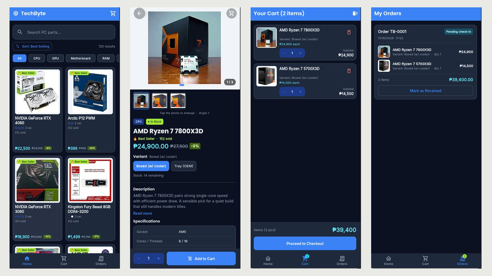
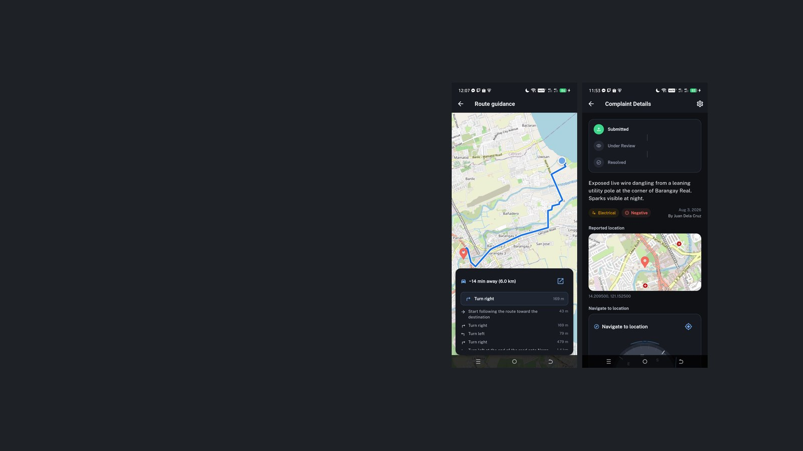
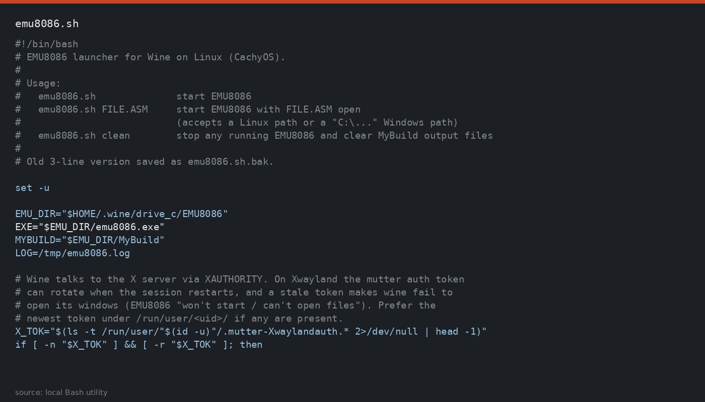

Mobile app development
I build Android apps with Flutter and Dart. CitiSense covers reporting and maps. TechByte covers 120 products across 12 categories, with product detail, cart and checkout. Both run on a phone.
See the TechByte app
I'm a CS student at City College of Calamba. I build Flutter apps like CitiSense and TechByte from a Linux machine. I avoid Windows 11, so I use Wine when a Windows application is needed.
See the projectsMobile app development on one side, Linux tooling on the other.

I build Android apps with Flutter and Dart. CitiSense covers reporting and maps. TechByte covers 120 products across 12 categories, with product detail, cart and checkout. Both run on a phone.
See the TechByte app
I develop on Linux and write Bash utilities for the setup around my work. The EMU8086 launcher uses Wine to run a Windows application without using Windows 11, and it handles Xwayland tokens. A small Python helper handles drive access.
See the Linux toolsA community app, an offline catalog and the shell scripts I use on Linux.